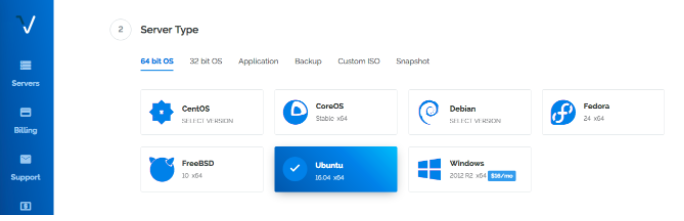
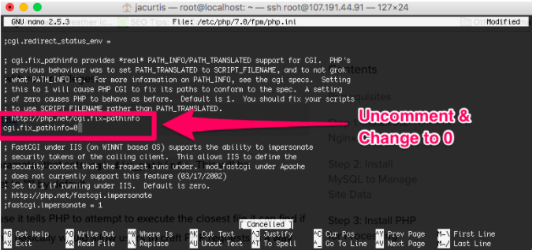

Now it is time to choose the physical location that your new server will be located. Each service has their own datacenter locations, but in general it is best to choose a location closest to where most of your users will be. So even if you are located in India, but most of your users are from the UK, then you should choose a London server. This makes your server fast for your users.
Select a location that you prefer to host it at that location. On some services there will be multiple dataservers at a single location. You basically just choose a number at random, it won’t make much difference, unless you have some sort of insider information at your disposal.
The next step requires you to select which version of Linux you would like to use (this will configure the “L” in our LEMP stack. For this tutorial we will be using Ubuntu 16.04 x64 as our distro. Of course any of these will work if you have experience with them, but I will be demonstrating Ubuntu 16 in this tutorial.
Now that you have an SSH client, it is time to log into our server so we can set it up. In the terminal type:
Simply replace 100.100.100.100 with the IP address for your server. You will have this IP address in your dashboard on your host, or in an email sent to you from your host after the server finished setting up. You might want to write this down somewhere nearby for the time being since we will need it several times going forward. The first time you boot into your server and you are using SSH Keys, you will probably get a message asking you if you want to trust or add this IP address to your list of known hosts. Just agree to it to continue and you will not get this message again. Now that you are into your server you will get a welcome message from Ubuntu.
We will be using the Apt-Get package installer to install new programs on our server. Think of this like the Apple App Store or Google Play Store, except not as cool looking, and it is for Linux programs. Before we start installing things, let’s make sure that our Apt-Get Installer is up to date. To do this just tell it to update with this command:
The line we need to edit is cgi.fix_pathinfo=0 so you can either search for it like a needle in a haystack, or you can search for it using Ctrl+W , I personally recommend searching for it. Press Ctrl+W and now type in cgi.fix_pathinfo= and click enter. This will take you to the right line right away. You will see a semicolon the left of this line. Delete the semi colon and then change the 1 into a 0 and save the file. The file should look like this upon saving:
To save something in Nano, just press Ctrl+X and type Y and then press Enter. Before the changes can take effect we need to restart php-fpm by typing in this command: Now our change has taken effect.


Database Migrated